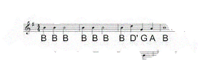

Puzzel II
Het zingend koraal
Als de code allleen maar bestaat uit letters van het alfabet zoals DEFG, Dan weet je het een zingend koraal puzzel is!
Nu.. bij deze puzzle moet je de noten tellen! Dus als D twee keer gespeeld wordt in het lied, is D 2!
Je kan altijd de piano knoppen indrukken om te horen hoe het klinkt!
De Fih fluistert
Hier is een voorbeeld:

nou.. dat zijn heel veel B's.. dus wat als onze code "DABG" was?
nou.. er is 1 D.. 1 A.. en een heleboel B's! Dat zijn er.. 8! En nu? Gewoon 1 G!
dat maakt onze code 1181! ..Nogal een overbodige code.. maar dat maakt niet uit!